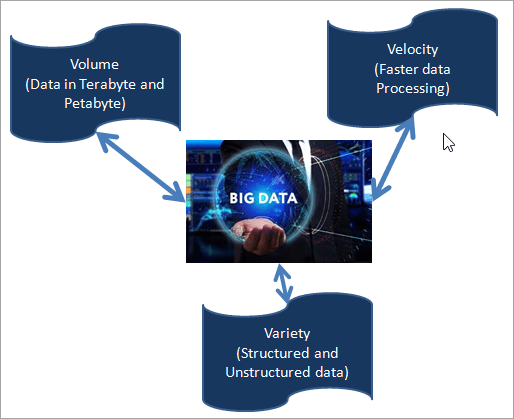
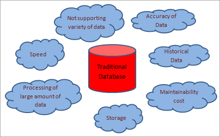
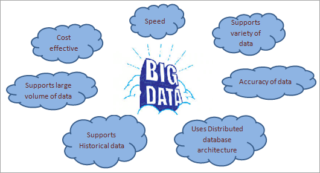
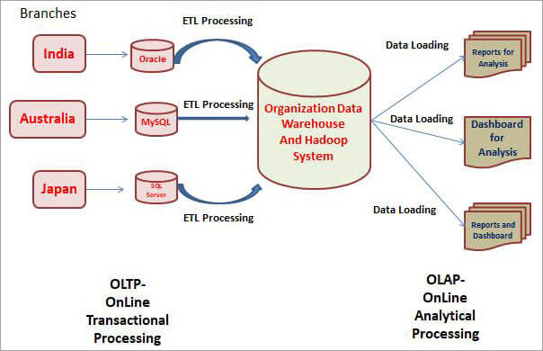

什么是大数据
什么是大数据？
“巨大”这个词不足以解释大数据，某些特征将数据分类为大数据。
我们有大数据的三个主要特征，如果任何数据满足这些特征，那么它将被视为大数据。它是下面提到的三个 V 的组合：
- volume：体积
- velocity：速度
- variety：多样性

volume：应该是巨大体积的数据。大数据具有维护大量数据的解决方案，这些数据以TB或PB为单位。我们可以轻松有效地对大数据执行CRUD（创建，读取，更新和删除）操作。
volecity：更快地访问数据。如今的社交媒体需要在很短的时间内快速交换数据，而大数据是它的最佳解决方案。因此，速度是另一个特征，它是数据的处理速度。
variety：在社交媒体上，我们正在处理非结构化数据，如音频或视频记录，图像等。此外，银行领域等各个行业都需要结构化和半结构化数据。大数据是在一个地方维护两种类型的数据的解决方案。
多样性意味着不同类型的数据，如多个来源的结构化/非结构化数据。
结构化数据：具有适当结构的数据或可以轻松存储在任何关系数据库中（如Oracle，SQL Server或MySQL）中的表格形式的数据称为结构化数据。我们可以轻松有效地处理或分析它。
结构化数据的一个例子是存储在关系数据库中的数据，可以使用SQL（结构化查询语言）进行管理。例如员工数据（姓名、ID、职称和薪水）可以以表格格式存储。
在传统数据库中，只有在非结构化或半结构化数据格式化或适合关系数据库后，我们才能执行操作或处理数据。结构化数据的示例包括 ERP、CRM 等。
半结构化数据：半结构化数据是未完全格式化的数据。它不存储在数据表或任何数据库中。但是，我们仍然可以轻松准备和处理它，因为此数据包含标记或逗号分隔值等。半结构化数据的示例：XML文件，CSV文件等。
非结构化数据：非结构化数据是没有任何结构的数据。它可以是任何形式，没有预定义的数据模型。我们无法将其存储在传统数据库中。搜索和处理它很复杂。
此外，非结构化数据的数量也非常高。非结构化数据的示例：电子邮件正文、音频、视频、图像、实现的文档等。
传统数据库的挑战

- 传统数据库不支持各种数据，即它无法处理非结构化和半结构化数据。
- 传统数据库在处理大量数据时速度很慢。
- 在传统数据库中，处理或分析大量数据非常困难。
- 传统数据库能够存储以 TB 或 PB 为单位的数据。
- 传统数据库无法处理历史数据和报告。
- 经过一定时间后，需要对数据库进行数据清理。
- 使用传统数据库，维护大量数据的成本非常高。
- 传统数据库中的数据准确性较低，因为其中未维护完整的历史数据。
与传统数据库相比，大数据的优势

- 大数据负责处理、管理和处理不同类型的数据，如结构化、半结构化和非结构化数据。
- 它在维护大量数据方面具有成本效益。它适用于分布式数据库系统。
- 我们可以使用大数据技术长时间保存大量数据。因此，处理历史数据和生成准确报告很容易。
- 数据处理速度非常快，因此社交媒体正在使用大数据技术。
- 数据准确性是大数据的一大优势。
- 它允许用户根据当前和历史数据为其业务做出有效的决策。
- 错误处理、版本控制和客户体验在大数据中非常有效。
大数据中的挑战和风险
挑战：
- 大数据面临的主要挑战之一是管理大量数据。如今，数据来自各种来源的系统，种类繁多。因此，对于公司来说，妥善管理它是一个非常大的挑战。如，要生成包含过去 20 年数据的报告，它需要保存和维护系统过去 20 年的数据。为了提供准确的报告，有必要仅将相关数据放入系统。它不应该包含不相关或不必要的数据，否则保持如此大量的数据对公司来说将是一个巨大的挑战。
- 该技术的另一个挑战是各种类型数据的同步。众所周知，大数据支持来自不同来源的结构化、非结构化和半结构化数据，因此同步数据并获得数据的一致性非常困难。
- 公司面临的下一个挑战是专家的差距，他们可以帮助和实施他们在系统中面临的问题。这个领域的人才缺口很大。
- 处理合规性方面成本高昂。
- 大数据的数据收集、聚合、存储、分析和报告具有巨大的成本。组织应该能够管理所有这些成本。
风险：
- 它可以处理各种数据，但如果公司无法正确理解需求并控制数据源，那么它将提供有缺陷的结果。因此，它将需要大量的时间和金钱来调查和纠正结果。
- 数据安全是大数据的另一个风险。由于数据量很大，因此有人窃取数据的可能性更高。数据黑客可能会窃取和出售公司的重要信息（包括历史数据）。
- 此外，数据隐私是大数据的另一个风险。如果我们想保护个人和敏感数据免受黑客攻击，那么它应该受到保护，并且必须通过所有隐私政策。
大数据技术
- Apache Hadoop
- Microsoft HDInsight
- No SQL
- Hive
- Sqoop
- BigData in Excel
大数据和数据仓库
数据仓库是我们在讨论Hadoop或大数据测试之前需要了解的基本概念。
让我们从实时示例中了解数据仓库。例如，有一家公司在三个不同的国家建立了分支机构，让我们假设在印度，澳大利亚和日本设有分支机构。
在每个分支机构中，整个客户数据存储在本地数据库中。这些本地数据库可以是普通的经典RDBMS，如Oracle或MySQL或SQL Server等，所有客户数据都将每天存储在其中。
现在，每个季度、每半年或每年，组织都希望分析这些数据以进行业务开发。为了做同样的事情，组织将从多个来源收集所有这些数据，然后将其放在一个地方，这个地方被称为**”数据仓库”。**
数据仓库是一种数据库，它包含通过**”ETL”（即 E xtract、T ransform 和L**oad）过程从多个源或多个数据库类型中提取的所有数据。数据在数据仓库中准备就绪后，我们可以将其用于分析目的。
因此，为了进行分析，我们可以根据数据仓库中的可用数据生成报告。可以使用商业智能工具生成多个图表和报告。
我们需要数据仓库用于分析目的，以发展业务并为组织做出适当的决策。

在此过程中发生了三件事，首先是我们从多个源中提取数据，并将其放在数据仓库的单个位置。
在这里，我们使用”ETL”过程，因此在将数据从多个源加载到一个地方时，我们将在转换根中应用它，然后我们可以在这里使用各种ETL工具。
一旦数据准备好进入数据仓库，我们就可以生成各种报告，以使用商业智能（BI）工具分析业务数据，或者我们称之为报告工具。Tableau 或 Cognos 等工具可用于生成报告和 DashBoard，用于分析业务数据。
OLTP 和 OLAP
本地维护并用于事务目的的数据库称为OLTP，即联机事务处理。日常事务将存储在此处并立即更新，这就是为什么我们称它们为OLTP系统。
在这里，我们使用传统数据库，我们有多个表，并且有关系，因此一切都是根据数据库系统地规划的。我们不会将这些数据用于分析目的。在这里，我们可以使用经典的RDMBS数据库，如Oracle，MySQL，SQL Server等。
当我们进入数据仓库部分时，我们使用Teradata或Hadoop系统，它们也是一种数据库，但DataWarehouse中的数据通常用于分析目的，称为OLAP或在线分析处理。
在这里，数据可以每季度，每半年或每年更新一次。有时数据也会”Offerly”更新，其中Offerly表示根据客户要求更新和获取数据以进行分析。
此外，用于分析的数据不会每天更新，因为我们将按计划从多个来源获取数据，并且可以执行此 ETL 任务。这就是在线分析处理系统的工作原理。
同样，BI工具或报告工具可以生成报告以及仪表板，并且基于此，业务人员将做出改进其业务的决策。
大数据从何而来？
大数据是超出传统数据库的存储和处理能力的数据，它采用结构化和非结构化格式，因此无法由本地RDBMS系统处理。
这种数据将以TB（TB）或PB或更高速率生成，并且现在正在迅速增加。有多个来源可以获得这种数据，例如Facebook，WhatsApp（与社交网络有关）;亚马逊，与电子商务相关的Flipkart;Gmail，Yahoo，Rediff与电子邮件和Google等搜索引擎有关。我们还从手机中获取大数据，例如SMS数据，通话记录，通话记录等。
总结
大数据是高效、安全地处理大量数据的解决方案。它还负责维护历史数据。这项技术有很多优点，这就是为什么每家公司都想转向大数据